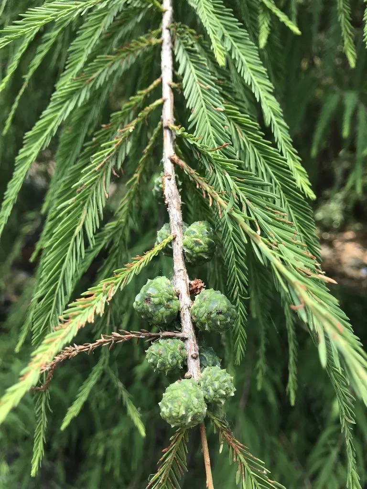

乔木 · 植物界
墨西哥落羽杉 Taxodium mucronatum

柏科落羽杉属常绿大乔木，原产墨西哥与危地马拉的河谷湿地，树姿雄伟、极耐水湿，是墨西哥的国树。
- 分类
- 门裸子植物门纲松柏纲目松柏目科柏科属落羽杉属
- 栖息环境
- 热带与亚热带高原的河谷、溪流两岸及沼泽湿地，常沿水系成片生长
- 地理分布
- 原产墨西哥、危地马拉；中国华南、西南的植物园与湿地公园有引种
- 保护级别
- IUCN 暂无评估；原生河谷生境受水利工程与城市扩张影响
物种志
墨西哥落羽杉为常绿或半常绿大乔木，高可达 30–40 米，主干粗壮通直，树皮灰褐色并纵裂成条片。叶片条形、扁平，在侧枝上排成整齐两列，幼树叶片柔软，老树较硬。雌雄同株，雄球花生于小枝顶端，雌球花单生，球果近球形，成熟时深褐色，种子具翅，可随风传播。
该种原产墨西哥与危地马拉的高原河谷、溪流两岸，常沿水系形成纯林，是墨西哥的国树，传说阿兹特克末代君主曾在树下哭泣，因而有“悲伤之夜之树”的别称。它喜充足光照与湿润土壤，耐水湿，可长期生于浅水中，但幼期不耐霜冻。木材轻软，可制家具、箱板与造纸；树姿雄伟，适合在温暖地区作滨水景观树。中国南方植物园与湿地公园已有引种栽培。
形态与习性
- 株高可达 30–40 米，主干粗壮通直
- 花期2–3 月，雄球花黄色
- 球果成熟9–10 月，球果深褐色
- 光照喜光，幼树稍耐侧方庇荫
- 水分极耐水湿，可长期生于浅水与沼泽
- 土壤深厚肥沃的冲积土，耐轻度盐碱
- 主要用途滨水景观、护岸林与用材
趣味知识
- 墨西哥落羽杉是墨西哥的国树，墨西哥城近郊的“悲伤之夜之树”据传树龄超过 2000 年。
- 它的根系能长出呼吸根，帮助植株在积水与沼泽环境中呼吸。
- 虽然中文名带“落羽”，本种在原生地多为常绿或半常绿，并不像落羽杉那样冬季全部落叶。
- 它的木材耐腐，曾被用于制作船只、枕木与家具。